MS в состоянии IDLE. Последовательность обслуживание осуществляется в следующем порядке (рис.2.14) [6-7]:
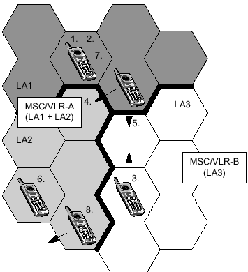
Рис.2.14. MS в режиме IDLE
Регистрация в сети, регистрация IMSI (IMSI attach)
Обновление местоположения (Location updating)
Смена соты внутри LA
Обновление местоположения внутри одного MSC/VLR
Обновление местоположения при входе в зону действия нового MSC/VLR
Обновление местоположения, тип - периодическая регистрация.
Отключение от сети (IMSI detach)
Полное отключение от сети (отсутствует информации о местонахождении MS) (Implicit detach).
Включение MS в сеть. IMSI Attached.Когда абонент включает MS (включает питание на MS), выполняется процедура IMSI attach, которая содержит в себе следующие шаги (рис.2.15):
MS передаёт в сеть сообщение «IMSI attach» указывая на то, что она изменила своё состояние из неактивного в IDLE.
VLR определяет, существует ли запись об этом MS. Если нет, то VLRсвязывается с HLR, к которому приписана данная MS, и копирует в себя данные абонирования этого абонента.
После этого VLR осуществляет обновление состояния MS и переводит это состояние в IDLE.
На MS передается уведомление.
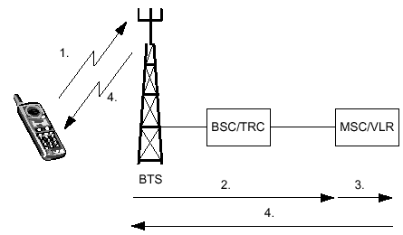
Рис.2.15. IMSI attach
Обновление местоположение (LU), тип – IMSI attach. Если MS изменила LА будучи в состоянии OFF, то процедура IMSI attach может привести к обновлению местоположения MS. VLR в течение выполнения процедуры IMSI attach может определить, что текущий идентификатор LAI мобильной станции отличается от LAI, хранящегося в SIM-карте MS. Если это так, то VLR обновляет информацию о LAI мобильной станции.
Сетевой роуминг. Смена соты внутри LA. MS постоянно находится в процессе перемещения по всей сети. Информация о местоположении MS отображается с помощью параметра зоны местоположения Location Area (LA) и хранится в VLR. Если MS меняет соты внутри одной LA, процедура обновления местоположения в сети не выполняется. Информацию о том, что новая сота принадлежит той же LA, мобильная станция получает из канала BCCH соседних сот. По каналу BCCH передается LAI сот. MS сравнивает принятое значение LAI с новым LAI. Если LAI совпадают, то это означает, что обновление местоположения выполняться не будет и нет необходимости оповещать об этом сеть.
Обновление местоположения внутри одного MSC/VLR. Если MS обнаруживает изменения в LAI на основе анализа информации, передаваемой по каналу BCCH, она информирует об этом сеть. Когда MS передает сообщение об обновлении местоположения, MSC/VLR определяет, зарегистрирован ли данный абонент в этом VLR, или он переместился в зону обслуживания данного MSC/VLR из зоны обслуживания другого MSC/VLR (рис.2.16).
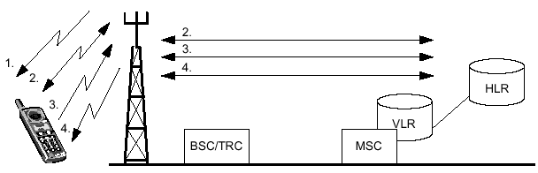
Рис.2.16. Обновление местоположения внутри одного MSC/VLR
MS прослушивает BCCH в новой соте, чтобы определить LAI. Новый LAIсравнивается со старым. Если существует различие, то необходимо провести обновление местоположения.
MS устанавливает соединение с сетью через SDCCH. Выполняется
аутентификация.
Если аутентификация прошла успешна, MS делает запрос в систему об обновлении местоположения.
Система подтверждает LU и дает команду базовой и мобильной станциям на освобождение канала.
Обновление местоположения при входе в зону обслуживания нового MSC/VLR. Обновление местоположения (LU) осуществляется тогда, когда MS перемещается в новую LA. Однако мобильной станции неизвестно, принадлежит ли LA новому MSC/VLR. Когда новый VLR принимает запрос об LU, то выполняется следующее (рис.2.17):
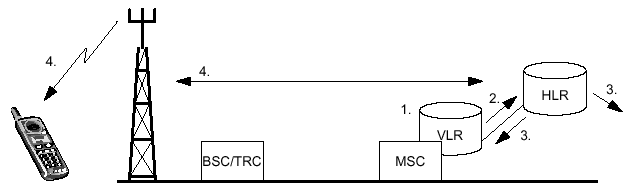
Рис.2.17 Обновление местоположения, при входе в зону действия обслуживания MSC/VLR
Выполняется аутентификация. Если аутентификация прошла успешно, VLR проверяет свою БД, чтобы определить, есть ли там информация о данном абоненте.
Когда VLR не находит информации о MS, он передаёт запрос в HLR абонента для осуществления копирования данных об этом абоненте в свой VLR.
HLR передаёт информацию в VLR и обновляет у себя информацию о местоположении MS.
VLR записывает информацию об MS, включающую в себя данные о последнем местоположении и состоянии IDLE. VLR передает оповещение в MS.
Обновление местоположения, тип - периодическая регистрация. Периодическая регистрация – это услуга, которая позволяет MS посылать регистрационные сообщения через определённые интервалы времени. В случае, если MS не регистрируется через определённый интервал времени, то система помечает MS как выключенную (detached). Последнее случается тогда, когда MS оказывается вне зоны обслуживания сети или в этом случае, когда системе нет необходимости осуществлять пейджинг на мобильную станцию. В случае, если сеть использует процедуру периодической регистрации, информация о периоде регистрации мобильной станции передается по каналу BCCH. Периодическая регистрация использует системное сообщение acknowledgment message. MS пытается зарегистрироваться в сети до тех пор, пока она не получит данное сообщение.
Отключение от сети. Отключение IMSI (IMSI Detach). Отключение IMSI указывает сети, что MS перешла в неактивное состояние. MS при отключении от сети направляет в сеть сообщение о своем отключении. VLR, получив такое сообщение, отмечает соответствующий IMSI как отключенный. HLR при этом не уведомляется. На MS не отправляется никакого подтверждающего сообщения.
Полное отключение от сети (Implicit Detach). Если MS направляет в сеть сообщение об отключении в условиях плохого качества обслуживания, система может не расшифровать информацию о выключении MS. Так как на MS не отправляется никакого подтверждающего сообщения, дальнейшие попытки сообщить об отключении не делаются. С помощью метода периодической регистрации сеть по истечении периода регистрации определит, что MS отключена. После этого VLR выполнит скрытое отключение, отмечая MS как отключенную. (Implicit Detach).
В случае, если MS выходит из зоны обслуживания сети и не выходит на связь в течение периода регистрации, то система также отмечает состояние MS как Implicit Detach.
Удаление из VLR информации о MS (MS Purging).Эта процедура используется для того, чтобы информировать HLR о предстоящем удалении информации о конкретном MS из VLR. После удаления из VLR этой информации HLR устанавливает флажок, указывающий на то, что данные о MS удалены и воспринимает эту MS как недоступную. Это исключает лишние процессы в сети, а также сокращает затраты ресурсов на проверку базы данных абонента.
Рассмотрим пример, когда MS из Узбекистана перемещается в Германию и производит обновление данных о местоположении в MSC/VLR сети GSM в Германии. Далее абонент переезжает обратно в Узбекистан. Переезд из Германии в Узбекистан занимает некоторое время. На протяжении этого времени MS абонента находится в неактивном режиме. Если не применять процедуру удаления данных об MS (MS Purging), то при поступлении вызова к данному абоненту HLR определяет MS как зарегистрированную в MSC/VLR Германии и направляет вызов в сеть GSM Германии. Затем MSC/VLR сети GSM Германии уведомляет HLR , что абонент недоступен.
При применении процедуры удаления данных об MS (MS Purging) запись узбекистанского абонента будет удалена из MSC/VLR Германии и при поступлении входящего вызова к этому абоненту HLR видит, что MS недоступна и, следовательно, не направляет вызов в MSC/VLR Германии.
Варианты сценариев обслуживания вызовов:
MS в активном режиме. MS находится в активном режиме тогда, когда она занята обслуживанием вызова, это состояние не зависит от вида трафика (речевого, факсимильного или передачи данных) и типа соединения (входящего или исходящего) (рис.2.18).

Рис.2.18. Вариант, когда активируется MS и вариант когда MS находится в активном режиме
Исходящий вызов от MS (тип трафика: речевой, факсимильный, передача данных или сообщения SMS).
Входящий вызов к MS (тип трафика: речевой, факсимильный, передача данных, сообщений SMS или рассылка сообщений оператора (cell broadcast)).
Хэндовер внутри BSC.
Хэндовер между разными BSC внутри одного MSC.
Хэндовер между разными MSC.
Исходящий вызов (MS – PSTN). Здесь описывается процесс обслуживания исходящего вызова, направленного от MS в сеть общего пользования (рис.2.19). Передача информации и данных описываются отдельно.
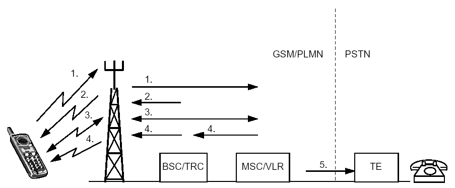
Рис.2.19 Установление исходящей связи между MS и абонентом
сети общего пользования
а. MS использует канал RACH для запроса сигнального канала.
b. BSC/TRC назначает канал AGCH.
c. MS через SDCCH направляет в MSC/VLR запрос на установление соединения. Все процессы сигнализации, предшествующие установлению соединения на канале трафика, проходят через каналSDCCH.
К процессам сигнализации относятся:
1. Отметка в VLR активного состояния MS (IMSI Attach).
2. Процедура аутентификации.
3. Идентификация оборудования.
4. Передача в сеть цифр В-номера абонента (набираемый номер).
5. Проверка статуса услуги «Запрет на исходящую связь» для данного абонента (инициирована/не инициирована).
а. MSC/VLR дает команду BSC/TRC назначить свободный TCH. BТS и MS получают команду настроиться на заданный TCH.
b. MSC/VLR направляет В-номер абонента на PSTN для установления соединения.
c. При ответе абонента связь считается установленной.
Входящий вызов (PSTN - MS). Главным отличием процедуры обслуживания входящего вызова от исходящего вызова является то, что при поступлении входящего вызова на MS неизвестно точное местоположение абонента. Следовательно, прежде чем установить связь с MS, необходимо передать вызывное сообщение для определения местоположения MS.
Ниже приведено описание процедуры установления соединения для входящего вызова от абонента PSTN к мобильному абоненту. Вызов с MS на MS происходит по той же схеме. Отличие только в том, что при входящей связи от MS установление соединения с MSC/VLR проходит через GMSC, а не через узел PSTN (рис.2.20).
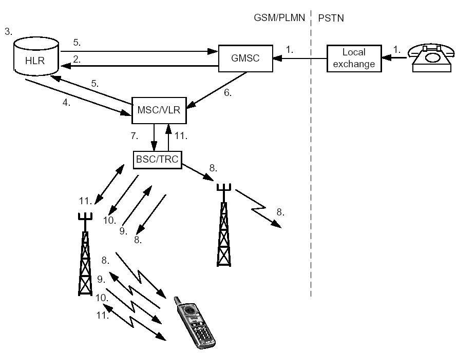
Рис.2.20 Входящий вызов (PSTN- MS)
1. Абонент PSTN набирает номер MS (MS ISDN). MS ISDN анализируется в PSTN, которая определяет, что осуществляется вызов абонента мобильной сети. Устанавливается связь с GMSC, которому принадлежит MS.
2. GMSC анализирует MSISDN, чтобы выяснить, в каком HLRзарегистрирован MS. Затем GMSC запрашивает у HLR информацию о том, как маршрутизировать вызов на обслуживающий его MSC/VLR.
3. HLR устанавливает соответствие между MS ISDN и IMSI и определяет, какой MSC/VLR обслуживает MS в настоящее время. HLR также проверяет, активизирована ли услуга «Переадресация вызова». Если услуга в активном состоянии, GMSC переадресует вызов на заданный номер.
4. HLR запрашивает MSRN у обслуживающего MSC/VLR.
5. MSC/VLR возвращает MSRN через HLR на GMSC.
6. GMSC анализирует MSRN и маршрутизирует вызов на MSC/VLR.
7. MSC/VLR располагает информацией о том, в какой LA находится MS. Пейджинговое сообщение направляется на BSC, который контролирует эту LA.
8. BSC направляет пейджинговые сообщения на все BТS, которые распространяют ее в нужной LA. BТS передают это сообщение по радиоинтерфейсу, используя канал РСН. Для пейджинга сеть использует IMSI или TMSI, действительный только в зоне обслуживания текущего MSC/VLR.
9. Когда MS определяет, что пейджинговое сообщение предназначено именно ей, она отправляет запрос на выделение канала SDCCH.
10.BSC обеспечивает SDCCH, используя AGCH (передает по каналу AGCH номер канала SDCCH, назначенный данной MS).
11.SDCCH используется для процедуры установления соединения. По этому каналу передается информация о номере канала TCH, назначенного данному MS на время установления соединения.
12.Мобильный телефон начинает звонить. Когда абонент ответит, соединение считается установленным.
Хэндовер (Handover). В терминологии GSM процесс смены сот во время соединения называется хэндовером. Выбор лучшей соты и измерения ее параметров производятся с помощью MS и BТS. Так как MS в выборе хэндовер играет важную роль, такой тип хэндовера часто называется хендовером с участием мобильных систем (МАНО – Mobile Assisted Hand Over).
Процедура осуществления хэндовера (Locating). MS измеряет уровни и качество сигнала своей собственной соты и уровни сигналов несущей ВССН соседних сот. Передача запроса на выполнение измерения производится в направлении dawlink, когда MS находится в активном режиме. Результаты замеров отправляются на BТS по каналу SACCH через определенные интервалы времени (рис.2.21). Обслуживающая BТS, получая от MS данные измерений, также осуществляет измерения.
Измерения от BТS и MS передаются в форме отчетов об измерениях (Measurement Reports). Основываясь на этих отчетах, BSC принимает решение о необходимости выполнения хэндовера. Если BSC принимает решение о выполнении хэндовера, он определяет, в какую соту будет передаваться управление. Этот процесс называется процедура осуществления хэндовера (locating).
Как только определяется, что какая-то из соседних сот лучше, чем обслуживающая сота, осуществляется хэндовер.
Другой причиной осуществления хэндовера является величина временной задержки (ТА). Если она превышает установленное оператором пороговое значение, осуществляется хэндовер. Обычно это происходит во время перемещения MS от одной соты к другой.
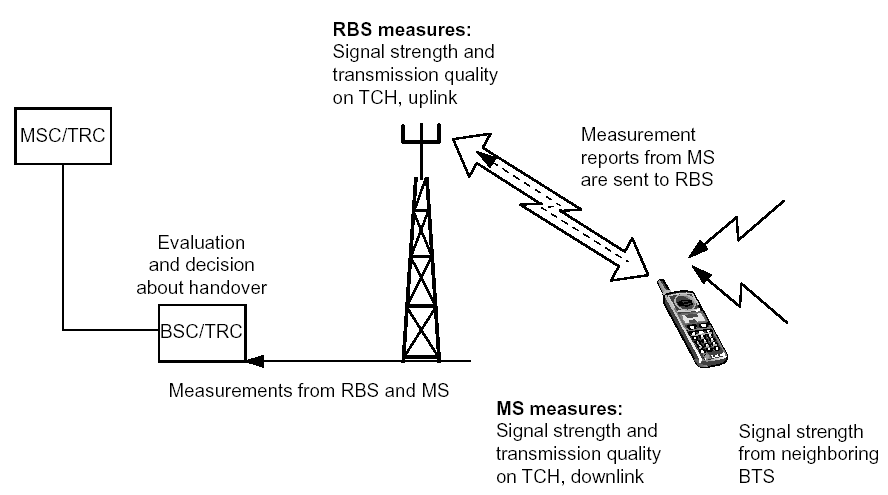
Рис.2.21. Результаты измерений, передаваемые на BSC
Как только MS переместится в другую соту, новая BТS информирует MS о новых соседних несущих ВССН. Последнее делается для того, чтобы могли быть произведены новые измерения. Если MS также переключается на новую LA, то новые данные об изменении местоположения будут обновлены по окончании разговора.
Хэндовер может использоваться для распределения нагрузки между сотами. Во время попытки установления соединения в перегруженную соту MS может быть перенаправлена в соту с меньшим трафиком, где качество соединения приемлемое.
Различные типы хэндоверов:
Хэндовер внутри соты;
Хэндовер между сотами, контролируемыми одной и той же BSC;
Хэндовер между сотами, контролируемыми разными BSC но одной и
же MSC/VLR;
• Хэндовер между сотами контролируемыми разными MSC.
Каждый из этих случаев описывается более подробно ниже.
Хэндовер внутри соты. Этот тип хэндовера применяется в том случае, если BSC определяет, что качество соединения слишком низкое, но нет никаких данных об измерениях, указывающих на то, что есть сота с лучшими значениями параметров. В этом случае BSC определяет другой канал (частоту) в этой же самой соте, где качество может быть лучше, и MS перенастраивается на этот канал.
Примечание: BSC всегда пытается сначала использовать хэндовер на частотный канал другой соты. В случае, если такого канала нет, применяется внутрисотовый хэндовер.
Хэндовер между сотами, контролируемыми одним и тем же BSC. MSC/VLR не участвует в выполнении междусотового хэндовера между двумя сотами, контролируемыми одной и той же BSC. MSC/VLR будет информирован об осуществлении хэндовер. Если хэндовер охватывает разные LA, то обновление данных о местоположении будет выполнено сразу же, как только соединение завершиться (рис.2.22).
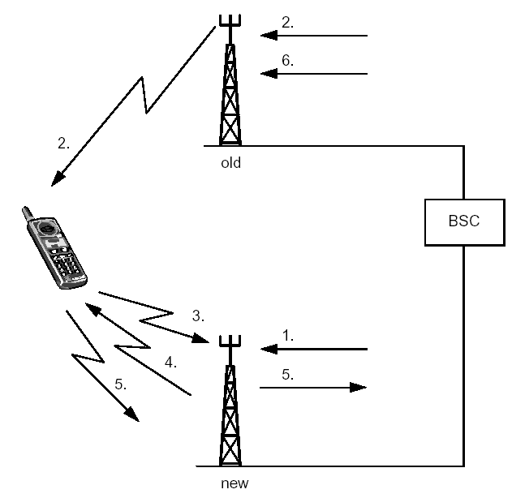
Рис.2.22. Хэндовер между сотами, контролируемыми одним и тем же BSC
BCS посылает команду на новую BTS для занятия TCH.
BSC через предыдущую BTS отправляет на MS сообщение о том, на какую частоту и какой временной интервал (TS) необходимо произвести замену, а также какую выходную мощность нужно использовать. Эта информация отправляется на MS по каналу FACCH.
MS настраивается на новую частоту и передает пакет доступа для выполнения хэндовера в нужный временной интервал. Так как MS еще не имеет информации о ТА, то пакеты для хэндовера очень короткие (только 8 бит информации).
Когда новая BTS определяет пакеты, содержащие информацию, необходимую для выполнения хэндовера, она отправляет информацию о ТА по FACCH.
MS отправляет полное сообщение для хэндовера на новую BSC через новую BS.
BSC сообщает предыдущей BTS о необходимости освободить ранее
использовавшийся ТСН.
Хэндовер между сотами, контролируемыми разными BSC, но одним и тем же MSC/VLR. Если в хэндовере задействован другой BSC, то для установления соединения между этими BSC должен использоваться MSC/VLR (2.23).
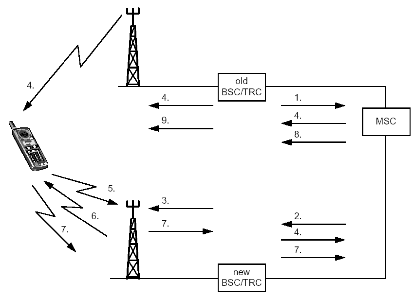
Рис.2.23Хэндовер между разными BSC, но внутри одного MSC/VLR
Обслуживающий (предыдущий BSC) отправляет в MSC сообщение, содержащее идентификатор нужной соты, с требованием на выполнение хэндовера,.
MSC располагает информацией о том, какой из BSC контролирует эту соту и отправляет запрос на хэндовер на эту BSC.
Новый BSC дает команду нужной BTS для выделения канала ТСН.
Новый BSC отправляет сообщение на MS через MSC и предыдущую BTS.
MS настраивается на новую частоту и передает пакет доступа для хэндовера, который будет выполняться в указанный временной интервал.
Новая BTS отправляет информацию о величине ТА.
MS отправляет полное сообщение о хэндовере на MSC через новый BSC.
MSC отправляет предыдущему BSC команду на освобождение ранее использовавшегося канала ТСН.
Хэндовер между сотами, контролируемыми разными MSCможет применяться внутри одной РLMN. Соты, контролируемые разными MSC/VLR, соответственно, контролируются разными BSC (рис.2.24).
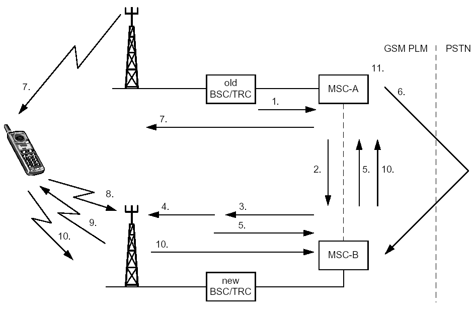
Рис.2.24. Межсотовый хэндовер между разными MSC/VLR
Обслуживающий (предыдущий) BSC отправляет сообщение с требованием на хэндовер на обслуживающий MSC (MSC-A) с идентификацией нужной соты.
MSC-A определяет, что эта сота принадлежит другой MSC (MSC-B) и запрашивает ее.
MSC-B определяет номер хэндовера для перемаршрутизации. Далее запрос на хэндовер отправляется на новую BSC.
Новый BSC отправляет команду нужной BTS для занятия ТСН.
MSC-B получает информацию и передает ее на MSC-A вместе с номером хэндовера.
Установление соединения с MSC-B возможно через PSTN.
7.MSC-A отправляет команду на хэндовер на MS через предыдущий BSC.
MS настраивается на новую частоту и передает пакеты доступа в нужный временной интервал.
Когда новая BTS определяет пакеты для хэндовера, она отправляет информацию о временной задержке (ТА).
MS отправляет полное сообщение о хэндовере на предыдущий MSC через новый BSC и новый MSC.
После этого устанавливается новый путь в MSC-A и соединение устанавливается через него.
Предыдущий ТСН освобождается тем BSC, который ранее управлял
соединением (на рис.2.24 этого не показано).
Предыдущий MSC (MSC-A) контролирует соединение до тех пор, пока оно не будет прекращено. Связано это с тем, что в нем содержится информация об абоненте и подробностях соединения, которые необходимы для тарификации.
MS после прекращения соединения должна обновить данные о местоположении, так как LA не может принадлежать более чем одной зоне обслуживания MSC. HLR передает данные в VLR-B для обновления в нем информации, а VLR-B, в свою очередь, передает в VLR-A команду на удаление всей информации о мобильном абоненте.
Международный вызов. Одной из основных характеристик GSM является возможность использования международного роуминга и осуществления международных соединений. Для того, чтобы абоненты могли воспользоваться услугой роуминга в сетях, принадлежащих операторам разных сетей сотовой связи, необходимо заключить между операторами роуминговое соглашение. Это же касается международного роуминга.
Процессы обслуживания международных вызовов при роуминге не отличаются от вариантов обслуживания вызовов абонентов, находящихся в пределах собственной сети. Но, тем не менее, рассмотрим два случая, характерных для случая роуминга.
Включение IMSI (IMSI Attach). Когда MS требует обслуживания в режиме международного роуминга, происходит следующее:
MS включается и начинает сканировать все частоты GSM внутри одного частотного диапазона (GSM –900). Производится поиск несущей ВССН. MS настраивается на ту несущую ВССН, которая имеет наибольший уровень сигнала и считывает ее системную информацию. Так происходит распознавание сетевого оператора.
MS сравнивает идентификатор сети со списком запрещенных PLMN, хранящимся в памяти SIM. Этот список содержит все сетевые идентификаторы, с которыми домашний оператор не имеет роуминговых соглашений. Если сеть, на которую настроилась MS, является запрещенной, то MS продолжает поиск разрешенной сети.
Если MS не находит разрешенной сети, но идентифицировала запрещенную сеть, то она выдает сообщение «Только экстренные вызовы». Если MS находит разрешенную сеть, то она настраивается на нее и отправляет сообщение о регистрации IMSI (IMSIAttach).
Этот случай идентичен случаю нормальной регистрации IMSI (в собственной сети). Отличие состоит только в том, что абонентский HLR находится в другой стране.
Вызов на MS. Когда MS находится в международном роуминге и на нее поступает вызов, процедура идентична той, когда MS находится в своей собственной сети. Разница лишь в том, что используемые GMSC и HLR находятся в собственной сети, а MSC/VLR находится в сети другой страны.
Процедура Dropback. Следующий случай показывает преимущество использования процедуры dropback (рис.2.25).
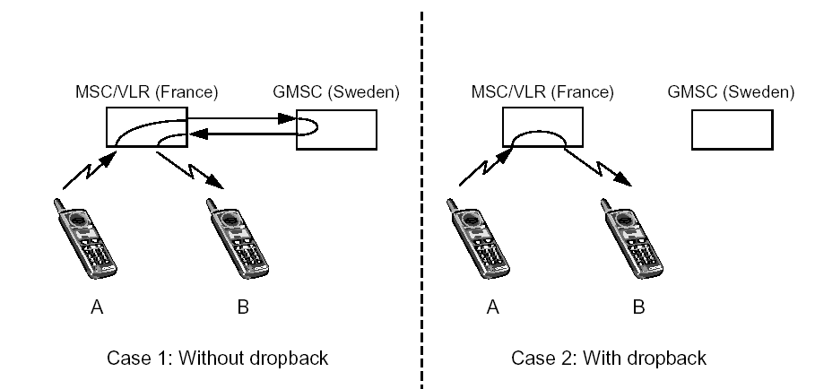
Рис.2.25. Случай, показывающий преимущества при использовании dropback
В данную процедуру вовлекается два абонента. Рассмотрим пример, когда:
Абонент А из Франции находится во Франции, его MS контролируется собственной MSC.
Абонент В из Узбекистана находится в настоящий момент в Международном роуминге во Франции, его MS контролируется MSC/VLR-A.
Абонент А звонит абоненту В. Вызов маршрутизируется из Франции в Узбекистан.
1.Сеть Узбекистана определяет, что абонент В находится в зоне действия MSC/VLR-A во Франции и перенаправит вызов обратно во Францию. Абоненты соединяются друг с другом в сети GSM Франции и ведут разговор.
Без использования процедуры dropback: разговор при вызове идет через GMSC Узбекистана.
С использованием процедуры dropback: разговор при вызове
переключается внутри MSC/VLR-A, что существенно влияет на стоимость разговора.
Передача коротких сообщений. Служба коротких сообщений (SMS) предоставляет мобильным станциям средства для обмена текстовыми сообщениями, содержащими до 160 буквенно-цифровых символов. SMS-C (SMS Сеnter) является хранилищем и центром, перенаправляющим короткие сообщения.
SMS поддерживает две основные услуги:
Мобильный прием SMS: от SMS-C на MS
Мобильная передача SMS: от MS на SMS-C
В обоих случаях MS находится в состоянии IDLE. Если MS находится в активном режиме, то короткие сообщения передаются по каналу SACCH. Пейджинг, установление соединения, аутентификация и т.д. в этом случае не требуется.
Передача SMS с MS. Мобильная передача SMS подразумевает передачу коротких сообщений от MS на SMS-C, который, в свою очередь, обеспечивает информацию о доставке сообщения, либо о его недоставке (рис.2.26).
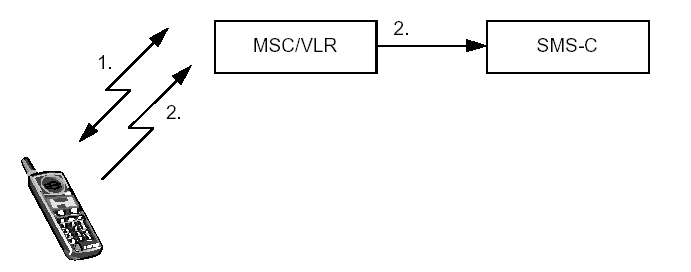
Рис.2.26 Мобильная передача коротких сообщений
MS устанавливает соединение с сетью, как в случае нормального установления соединения, используя сигнальные каналы RACH, AGCH, SDCCH.
Если аутентификация прошла успешно, MS отправляет короткое сообщение по каналу SDCCH на SMS-C через MSC/VLR. SMS-C перенаправляет короткое сообщение в пункт назначения. Это может быть MS или терминал выделенной сети, например РС.
Мобильный прием SMS- это возможность передачи коротких сообщений от SMS-C на MS (2.27).
Пользователь отправляет сообщение на SMS-C .
SMS-C отправляет сообщение на SMS-GMSC.
SMS-GMSC запрашивает HLR для маршрутизации вызова.
HLR возвращает информацию о маршруте на SMS-GMSC
SMS-GMSC перенаправляет сообщение на MSC/VLR.
На MS поступает вызывной сигнал, устанавливается соединение с сетью, так же как, для случая установления речевого соединения.
Если аутентификация успешна, то MSC/VLR передает короткое сообщение на MS, используя сигнальный канал SDCCH.
Если передача была успешной, то MSC/VLR отправляет отчет на SMS-C.Если нет, то MSC/VLR информирует HLR, и отчет о недоставке отправляется на SMS-C.
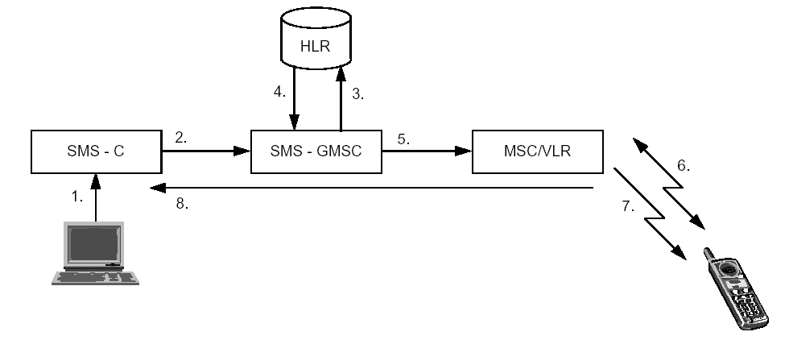
Рис.2.27. Прием коротких сообщений
В случае неуспешной доставки, SMS-C информирует HLR и VLR о том, что сообщение ожидает отправки на MS. HLR затем проинформирует SMS-C о том, когда MS станет доступной. Прием сообщений SMS-C может идти от различных источников, например, телекса, факсимильного аппарата, из сети Интернет.
Глава 3. Аспекты безопасности, протоколы сети,
частотный план и структура кадров в стандарте GSM